We believe when climate disasters hit, it’s the community that steps up first.
We are a network of grassroots, community-led groups working together to build disaster resilience across the Northern Rivers.
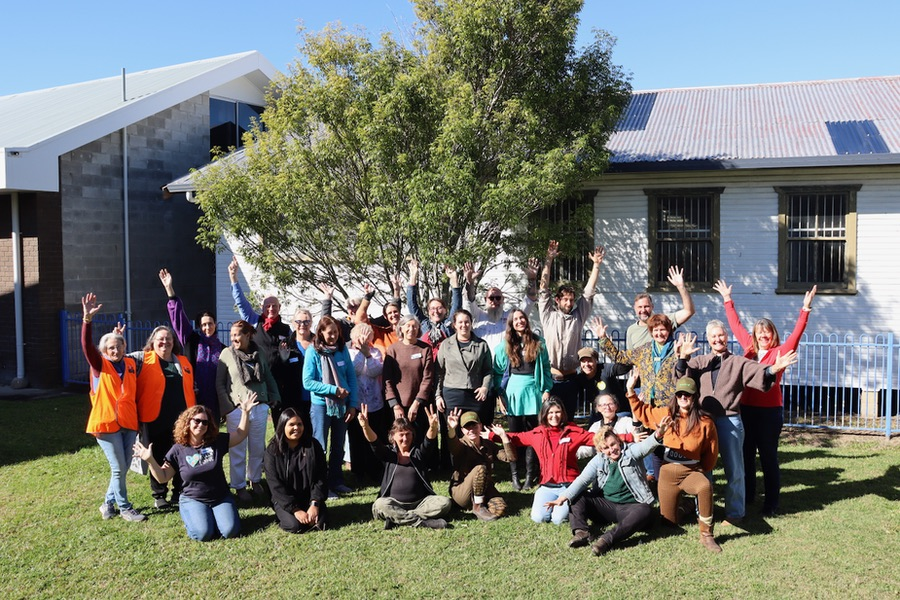
60+ groups in 8 Local Government Areas (LGA),
one region, one network.
- Tweed LGA
- Byron LGA
- Kyogle LGA
- Lismore LGA
- Richmond LGA
- Ballina LGA
- Tenterfield LGA
- Clarence Valley LGA
Community knowledge, lived experience and shared learning.
Since early 2024, groups and organisations across the Northern Rivers have joined together to form the Resilience Alliance, a community-led network focused on collective care, preparedness and regional strength.
Neighbours became first responders in 2022. Today, those neighbours are building the systems that will protect communities before the next disaster.
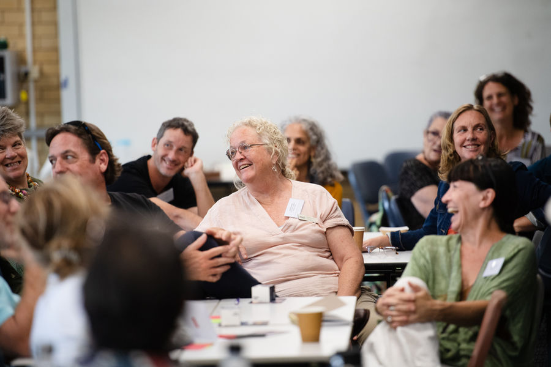
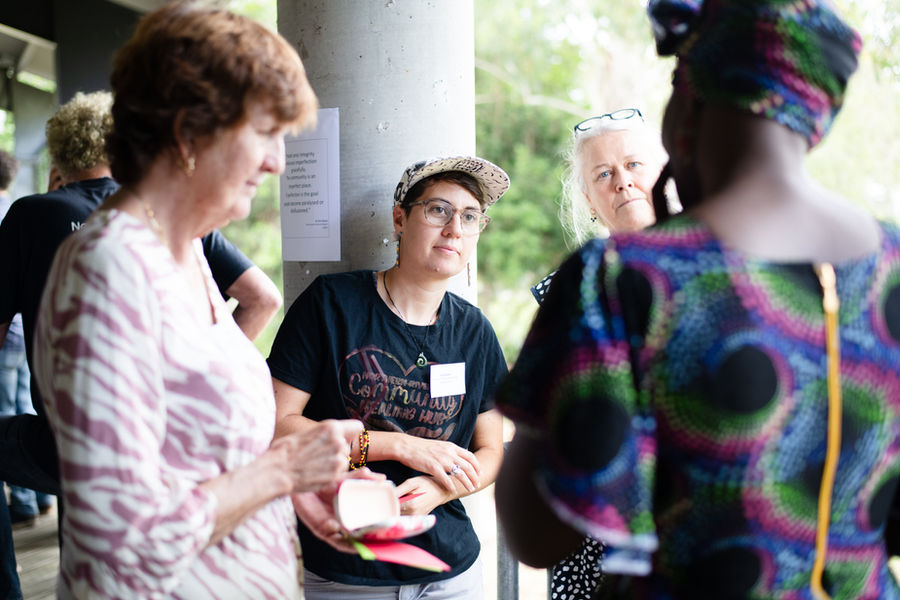
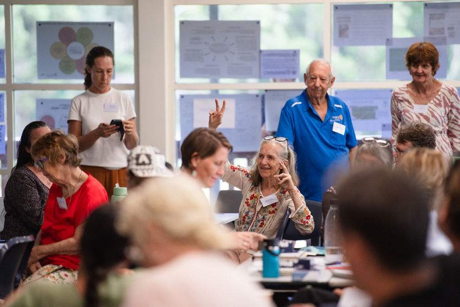
- 60+
- grassroots groups and organisations
- 8
- local government areas
- 3
- projects under way
- $800,000
- HELP Fund grants program, over two years
Upcoming, projects and the R.A.C.K
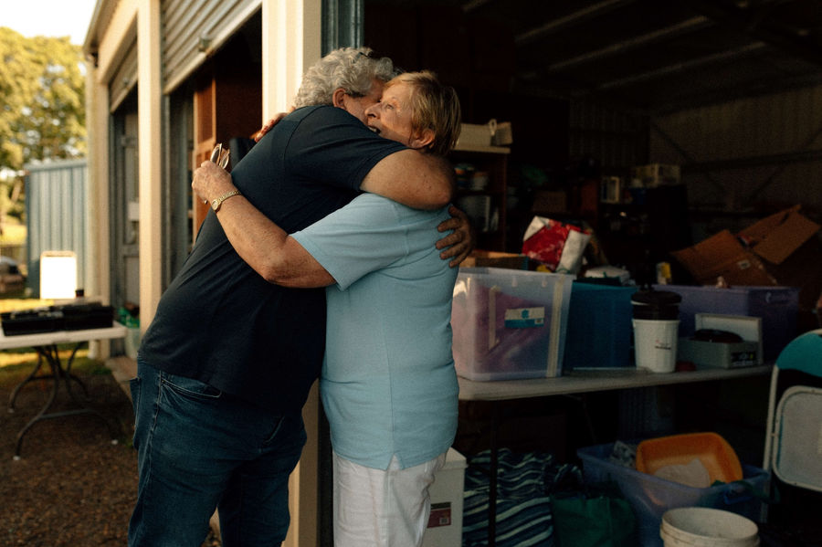
What our partners made possible
Our partners have helped the Alliance grow from one part-time coordinator to a regional team of six, fund Connected and Prepared, bring $800,000 in participatory grants to local groups and keep learning with researchers from the University Centre for Rural Health.
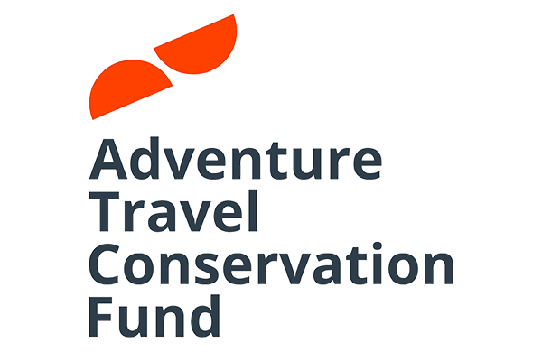
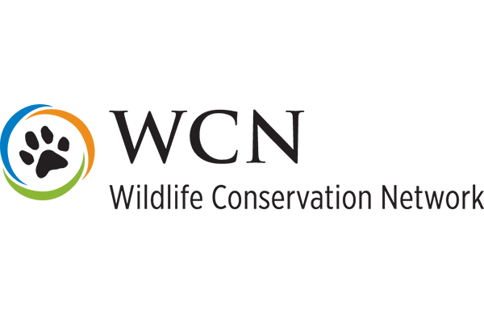
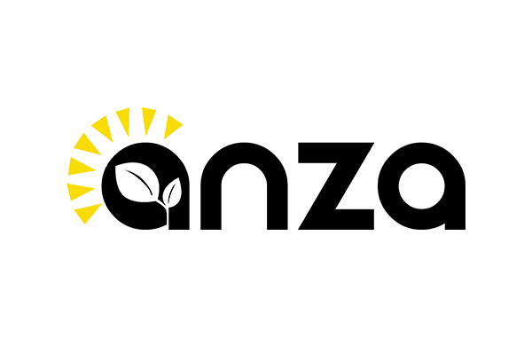
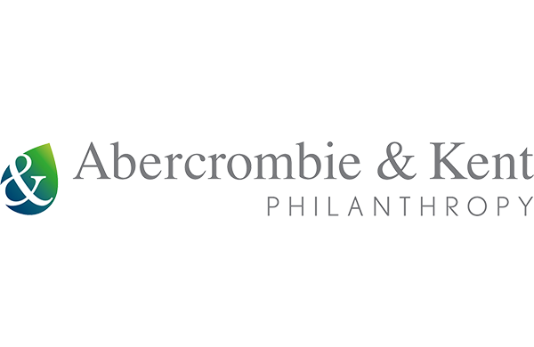
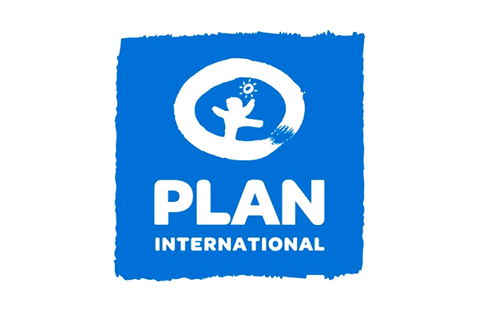
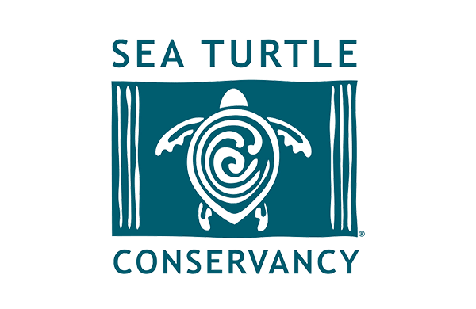
How you can be part of it
- Come to a gathering
27 Nov: Alliance Gathering, Phase 1.
Upcoming - Share knowledge
Add what works to the R.A.C.K.
The R.A.C.K - Partner with us
Fund or research community-led resilience.
Impact
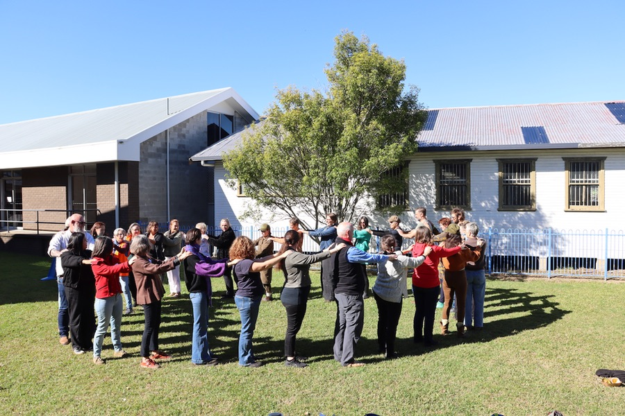
We’re changing the Northern Rivers’ resilience culture
Neighbours became first responders in 2022. Today, those neighbours are building the systems that will protect communities before the next disaster. The Alliance connects prepared communities to each other, sharing knowledge, reducing duplication and making sure no group is doing it alone.
Vision
Connected, collaborative Northern Rivers communities that are empowered to care for themselves and each other before, during and after disasters.
Our whyPurpose
To develop a self-sustaining, trusted Alliance of place-based, community-led resilience groups and organisations. The Alliance shares knowledge and resources, provides mutual support and wellbeing, takes collective action and advocates for identified community needs.
We have a MEAL plan
Monitoring, Evaluation, Accountability and Learning. A healthy Resilience Alliance isn’t just one that delivers projects. It’s one where people feel included, power is shared, groups gain real value, and we can learn and adapt together.
- Connect
- Listen
- Reflect
- Improve
- Share
- Strengthen
Includes Everyone
People feel respected and able to participate.
Builds Trust
Relationships and cooperation grow over time.
Shares Power
Groups influence priorities, leadership and decisions.
Builds Capability
Groups gain skills, resources and confidence.
Learns and Adapts
Feedback leads to practical changes.
Creates Collective Value
Groups gain what they couldn’t achieve alone.
Our journey
- 2022
After the floods and landslides, groups across the Northern Rivers organised locally and connections began to grow. Research found that grassroots groups wanted peer-to-peer support.
- 2024
The Resilience Alliance took shape, with the University Centre for Rural Health (UCRH) as embedded researchers documenting progress along the way.
- 2025
UCRH completed the first Resilience Alliance Health Check and shared findings with groups in the network.
- 2026
Connected and Prepared brings a Monitoring, Evaluation and Learning Framework and Implementation Plan.
- 2027 to 2028
Research and MEAL continue alongside the Alliance as it supports and resources groups in the network.
Meet the team
- NameNetwork Lead
- NameSteering committee
- NameSteering committee
- NameUCRH researcher
- NameUCRH researcher
- NameUCRH researcher
Sample placeholders. Names and photos to come.
How you can be part of it
- Come to a gathering
27 Nov: Alliance Gathering, Phase 1.
Upcoming - Share knowledge
Add what works to the R.A.C.K.
The R.A.C.K - Partner with us
Fund or research community-led resilience.
Impact
Impact
60+ grassroots, place-based groups across the Northern Rivers, working across five pillars.
8 council areas across the Northern Rivers region of New South Wales, Australia.
Placeholder map of the region. In the build this is the Alliance's own Google Map, with a pin for each member group.
Five pillars
Communities know their people, places and strengths. We connect them. We connect them using these five key pillars.
- 01
Grow the Alliance
Welcoming more place-based groups so no group works alone.
- 02
Training and resource sharing
Practical tools, templates and learning passed group to group.
- 03
Peer support and self care
Looking after the people who look after their communities.
- 04
Funding and collective projects
Participatory grants and shared projects, decided locally.
- 05
Advocacy
A stronger collective voice in funding, policy and planning.
All groups
- Sample group AMurwillumbah, TweedGrow the AllianceGroup description to come.
- Sample group BKyogle, KyogleGrow the AllianceGroup description to come.
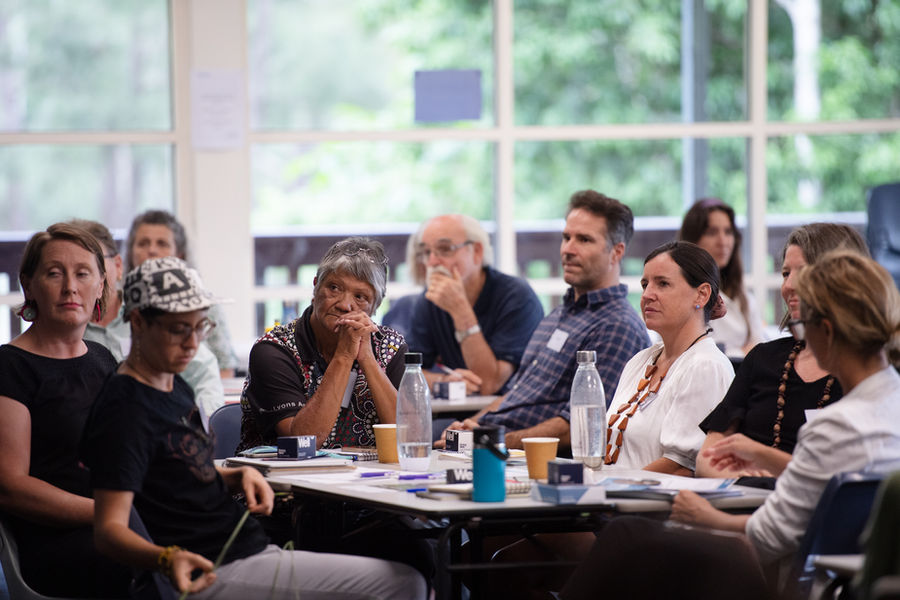
Sample group CGrafton, Clarence ValleyGrow the AllianceGroup description to come.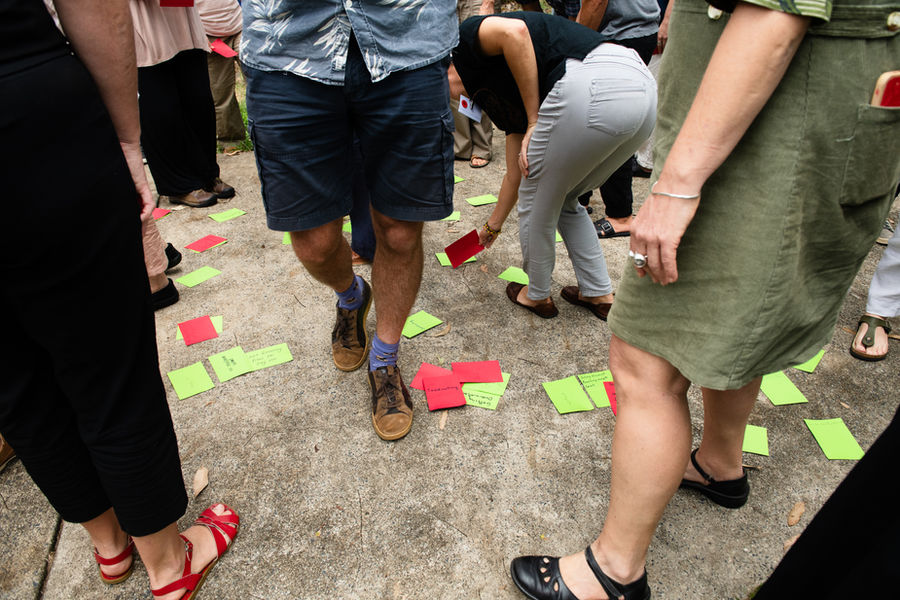
Sample group DMullumbimby, ByronTraining and resource sharingGroup description to come.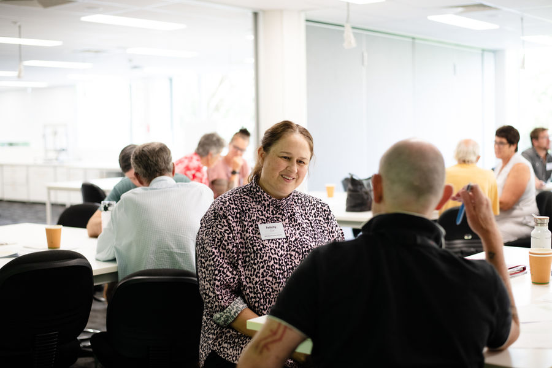
Sample group ELismore, LismoreTraining and resource sharingGroup description to come.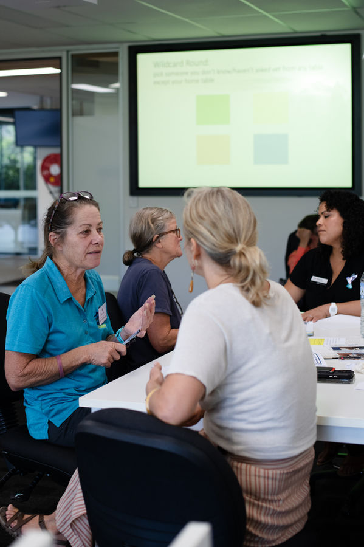
Sample group FCasino, Richmond ValleyTraining and resource sharingGroup description to come.- Sample group GWardell, BallinaPeer support and self careGroup description to come.
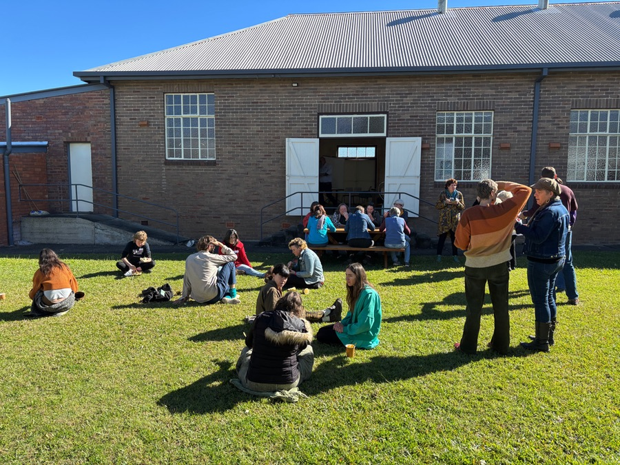
Sample group HUki, TweedPeer support and self careGroup description to come.- Sample group INorth Lismore, LismorePeer support and self careGroup description to come.
- Sample group JWoodburn, Richmond ValleyFunding and collective projectsGroup description to come.
- Sample group KBallina, BallinaFunding and collective projectsGroup description to come.
- Sample group LBillinudgel, ByronFunding and collective projectsGroup description to come.
- Sample group MCoraki, Richmond ValleyAdvocacyGroup description to come.
- Sample group NSouth Lismore, LismoreAdvocacyGroup description to come.
- Sample group OTumbulgum, TweedAdvocacyGroup description to come.
No groups match those filters.
Sample groups. Real names and areas come from the Alliance member list.
How you can be part of it
- Come to a gathering
27 Nov: Alliance Gathering, Phase 1.
Upcoming - Share knowledge
Add what works to the R.A.C.K.
The R.A.C.K - Partner with us
Fund or research community-led resilience.
Impact